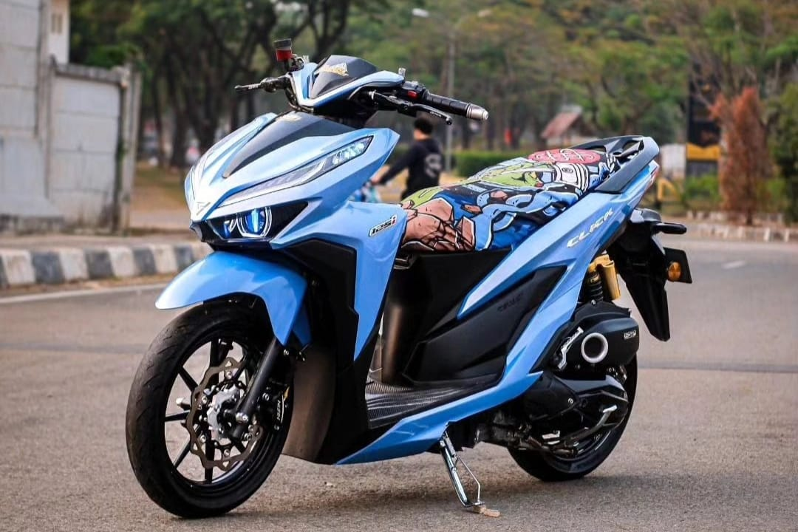

Artikel
Modifikasi
Menambah dan mengganti aksesoris Honda Vario 125 tahun 2023 merupakan langkah yang tepat untuk meningkatkan penampilan sepeda motor matic Vario Anda....  Area headlamp Motor Honda Vario 125 2023 memang sudah menggunakan lampu LED yang terkesan sangar. Namun ternyata dengan mengganti lampu utama motor Anda dengan model proyektor, selain memberikan kesan sangar, lampu Projie juga dapat membuat kesan mewah motor Anda pada saat malam hari. Cukup dana sekitar 3 jutaan Rupiah saja, Anda sudah bisa memiliki HID proyektor lampu Projie Honda Vario 125.
Workshop
Ada 4 materi safety riding yang dipersiapkan yang ditujukan buat komunitas motor dan pengunjung IMOS 2024. Indonesia Motorcycle Show (IMOS) 2024 akan berlangsung mulai 30 Oktober sampai 4 November 2024 mendatang di ICE BSD, Tangerang Banten. Program safety riding ini adalah FIFGroup Aman Berlalu Lintas (FABL). FIFGroup Aman Berlalu Lintas (FABL) merupakan rangakai inisiatif program safety untuk menyuarakan kampanye keselamatan berlalu lintas.
Baca Selengkapnya ...Training
Tertib lalu-lintas dan Safety Riding (keamanan berkendara) sebenarnya adalah hal yang pokok, wajib, dan mutlak diterapkan oleh setiap pengendara sepeda motor. Hanya saja, pengetahuan warga masyarakat soal ini dinilai masih rendah atau kurang. Lantas, siapakah pihak yang harus turun kelapangan memberikan teori dan edukasi, baik seminar, diskusi atau pelatihan dilapangan? Kemudian siapakah pihak yang mau secara terus menerus melakukan sosialiasasi dan kampanye soal pentingnya keamanan berkendara sepeda motor?
Baca Selengkapnya ...Bakti Sosial
Kegiatan sosial yang bekerja sama antara HVCI dengan Dompet duafa dan Posko bencana, untuk membantu saudara kita yang membutuhkan sehingga bisa menjadikan komunitas motor juga peduli sesama.
Baca Selengkapnya ...